El mundo de las Matematicas
En esta pagina web se mostrara algunos conceptos basados en los apuntes
en la libreta de Aplicaciones del Pensamiento Matematico, esta pagina web es teorica eh interactiva
¿Ques un Angulo?
- Es la porción del plano comprendido entre dos semirectas que tienen origen común es denominado vértice , mientras que las semirectas son los lados del ángulo.
Tipos de Ángulos:
Según su medida:
| Ángulo |
Descripción |
Imagen |
| Ángulo agudo |
Es aquel cuya abertura mide más de 0° y menos de 90°. Es el ángulo mas cerrado |
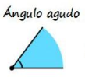 |
| Ángulo Recto |
Es aquel que mide exactamente 90° sus 2 lados son perpendiculares entre si. Es el ángulo que forma la esquina de un cuadrado |
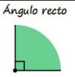 |
| Ángulo Obtuso |
Es aquel que mide más de 90° y menos de 180°. Es más abierto que el recto |
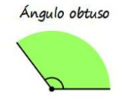 |
| Ángulo Llano |
Es aquel que mide exactamente 180°. Es más abierto que el recto |
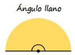 |
| Ángulo Completo |
Es aquel que mide 360°, abarca toda la circunferencia |
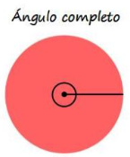 |
| Ángulo Nulo |
Es aquel cuya abertura es de 0°. No existe separación entre sus lados |
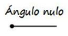 |
| Ángulo Cóncavo |
Es aquel que mide mas de 180° y menos de 360° |
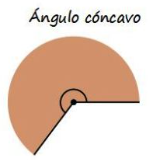 |
Según su posición:
| Ángulo |
Descripción |
Imagen |
| Ángulos Consecutivas |
Son las que comparten el mismo vértice y un lado común |
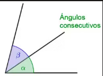 |
| Ángulos Adyacentes |
Son consecutivas y además sus lados comunes forman un ángulo de 180° |
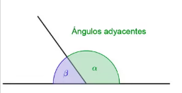 |
| Ángulos Opuestos por el Vértice |
Son los vértices que froman al cruzarse dos rectas. Están uno frente de otro y siempre miden lo mismo |
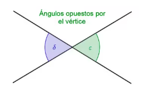 |
Según su suma:
| Ángulo |
Descripción |
Imagen |
| Ángulos Complementarios |
Son dos ángulos que al sumarse da como resultado 90° |
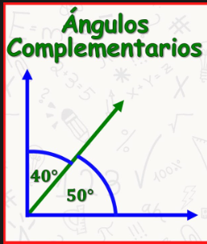 |
| Ángulos Suplementarios |
Son dos ángulos que al sumarse dan como resultado 180° |
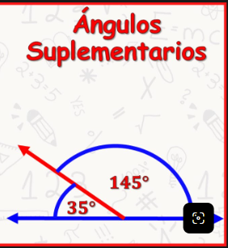 |
2 rectas paralelas son cortados por una transversal(o secante)
Se forman ocho ángulos en total que guardan relaciones de igualdad o suman 180° entre si.
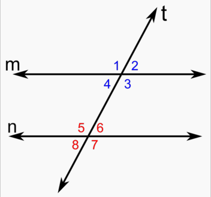
Correspondientes:
Están en la misma esquina, uno arriba y uno abajo. Son iguales.
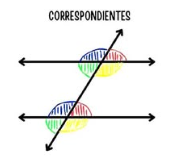
Alternos internos:
Están dentro de las paralelas, en lados opuestos de la secante. Miden lo mismo.
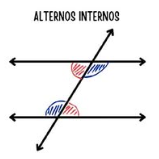
Alternos externos:
Están fuera de las paralelas, en lados opuestos. Miden lo mismo.
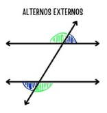
Colaterales / conjugados:
Están del mismo lado de la secante, suman 180°. No son iguales, sino suplementarios.
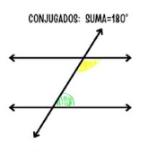
Formas de medidas para los ángulos
Los ángulos se miden principalmente en grados sexagesimales y en radianes mediante el uso de medidas y herraminetas geometricas
Grados sexagesimal(°):
- Divide una circunferencia completa en 360° partes iguales. Cada grado se divide en 60 minutos(') y cada minuto en 60 segundos(''). Es el sistema más común en la vida diaria y la educación básica
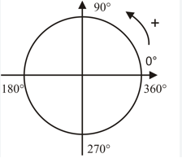
Radianes(rad):
- Es la unidad natural en Matematicas y Calculo. Un radián es el ángulo central de un circulo donde la longitud del arco es igual al radio. Una vuelta completa equivale a 2 pi radianes (aprox. 6.28 rad)
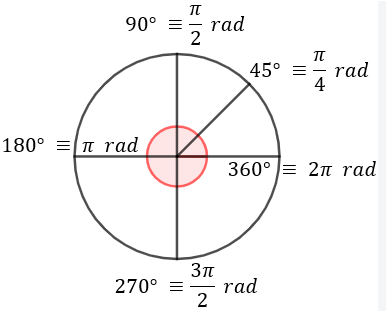
Conversión de Grados-minutos-segundos a grados decimales, grados decimales a radianes y viceversa
Triangulos Semejantes y Congruentes
Triangulo Semejante
- Ocurre cuando dos triángulos tienen la misma forma, aunque sus tamaños sean diferentes.
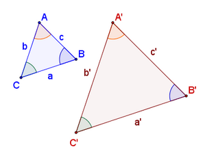
Ángulo-Ángulo:
Tiene dos ángulos correspondientes con la misma medida. Si dos ángulos son iguales, el tercer ángulo también lo será.Lado-Lado-Lado:
Sus tres pares de lados correspondientes son proporcionales.Lado-Ángulo-Lado:
Tienen un ángulo igual y los dos lados que lo forman son proporcionales en ambos triángulos.
Triangulo Congruente
- Significa que dos triángulos o más son exactamente iguales en forma y tamaño, sin importar si están girados o en distinta posición.
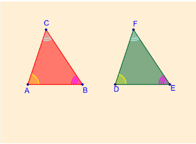
Lado-Lado-Lado:
Los dos triángulos tienen sus tres lados con exactamente la misma longitud.Lado-Ángulo-Lado:
Tiene dos lados de igual medida y el ángulo comprendido entre ellos es idéntico.Ángulo-Lado-Ángulo:
Tiene un lado de igual medida y dos ángulos ubicados en los extremos de ese lado son iguales.
Coordenadas Rectangulares y Polares
Coordenada:
Número que indica la posición de un punto respecto a un sistema de referenciaPar ordenado:
Conjunto de dos coordenadas (x,y) donde el orden importa. El primero es x y el segundo es yAbscisa:
Es la coordenada x, la horizontalOrdenada:
Es la coordenada y, la verticalPunto:
Es una posición en el plano, sin tamaño, se representa con un par ordenadoPolo:
Es el origen del plano polar. Es el equivalente al (0,0) del plano cartesiano. Desde ahí se miden todas las distanciasArgumento:
Es el ángulo θ que forma el punto con el eje polar, se mide en grados o radianes, antihorario desde el eje polarCoordenada rectangular:
Es la forma (x,y). También se le dice cartesiana
x = distancia horizontal
y = distancia verticalCoordenada polar:
Es la forma (r, θ)
r = distancia al polo
θ = argumento (ángulo)Plano Cartesiano:
Formado por 2 rectas perpendiculares: eje x y eje y. Se cortan en el origen (0,0), divide en 4 cuadrantes
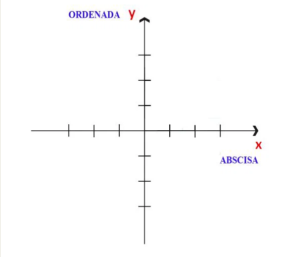
Plano Polar:
Formado por un punto (polo) y un rayo eje polar. Los puntos se localizan por distancia y ángulo, no por x y y
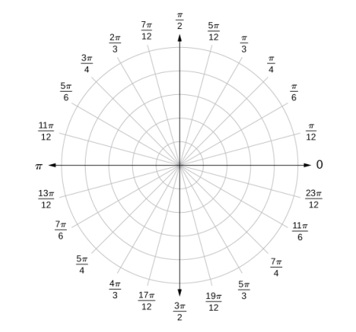
Conversion de coordenadas rectangulares a polares y viceversa